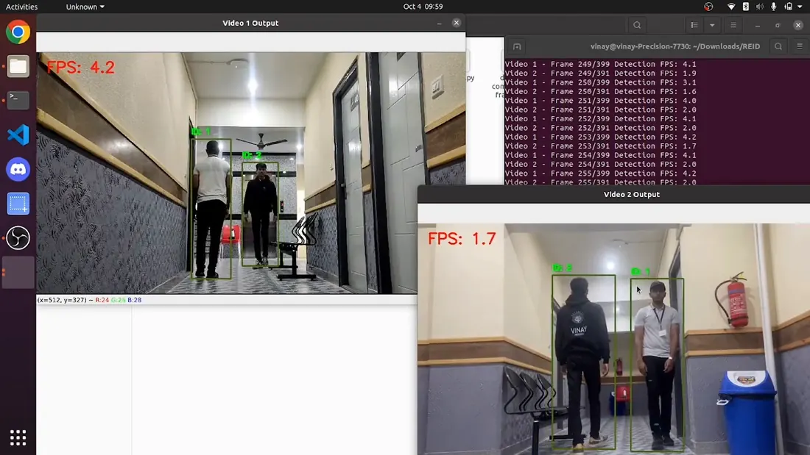
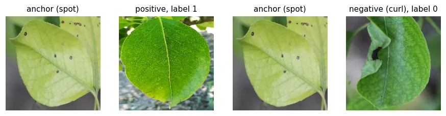
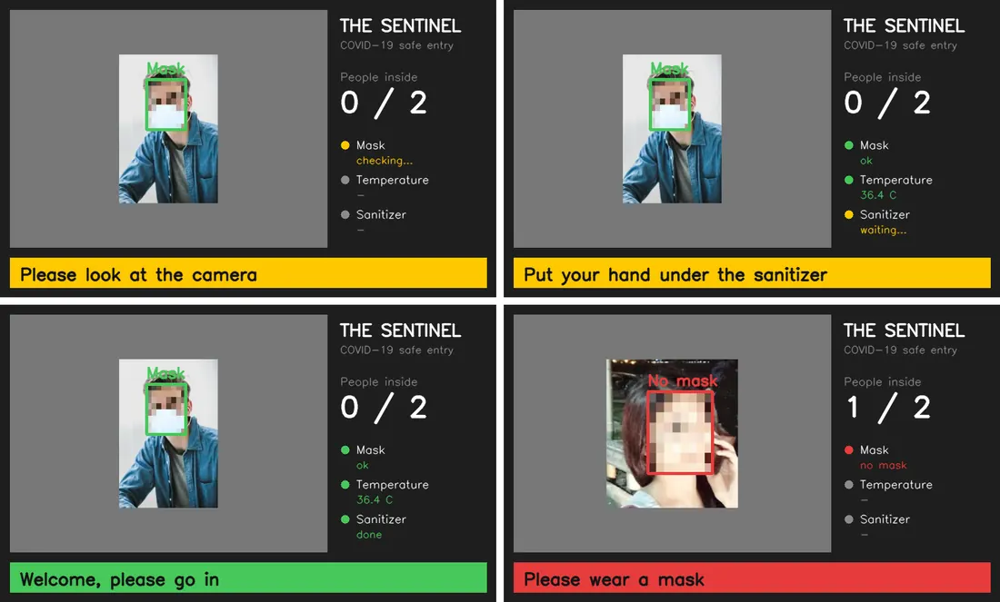
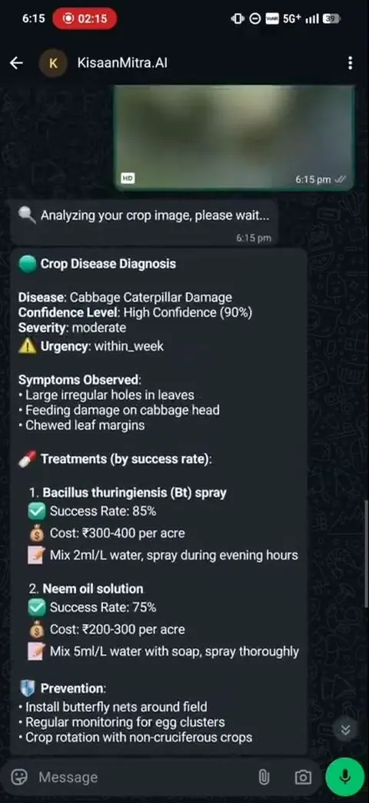
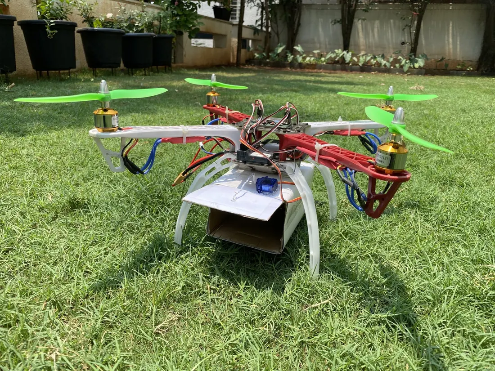
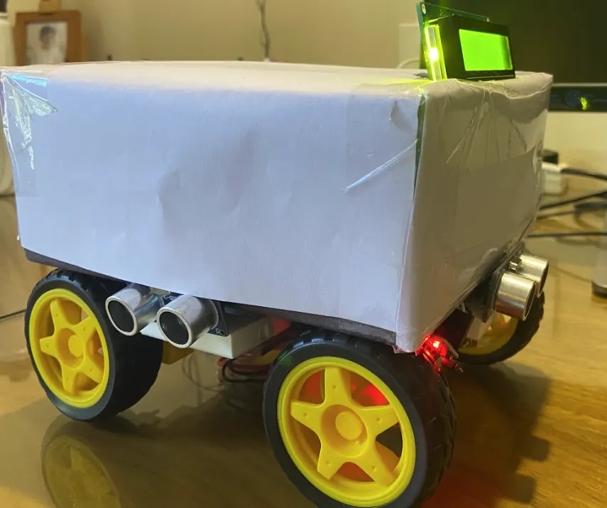
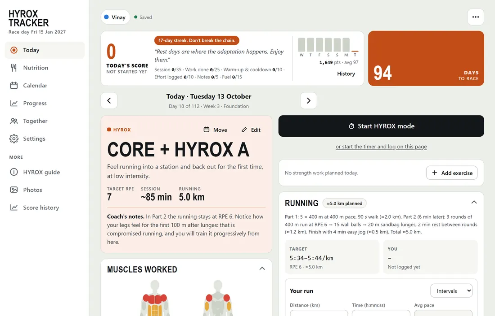
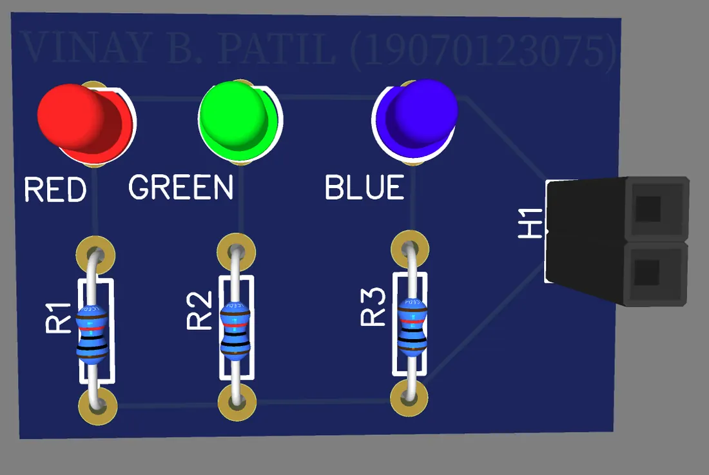
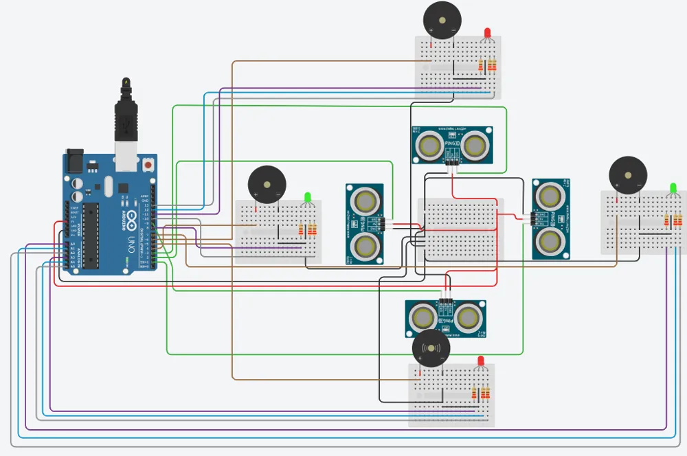

CV 2K23 National Hackathon
4th of 305 teams. Person tracking and re-identification across overhead cameras, crowd analytics with YOLOv8 and a brain tumour MRI classifier with Grad-CAM.
RepoNow · Aug 2023 – present
Lead Robotics & Software Engineer
I lead the Robotics & Software team building electro-optical, surveillance and robotic systems.
The scene is a generic stand-in: a pan-tilt head tracking a drone and a quadruped walking its loop.
01Autonomous Nursing Robot
A ward robot that does the routine bedside work between nurse rounds. It drives to each bed, checks temperature, pulse and SpO2, hands out medicine from three pill hoppers and lets staff video call the patient.
This is the real URDF and mesh set from the repo, doing a ward round with a live lidar scan.
How it works
02Farm Robot for Tomato Fields
Maps the field with its lidar, then drives up and down the plant rows on its own. A camera tilted at the ground finds weeds and sprays them. A second camera logs every leaf disease it sees with the robot's position on the map.
Real URDF meshes. Red frustum = weed camera, yellow = leaf camera, pins = logged disease.
Weed and disease patrol
03Size-Changing Crop Robot
A tracked robot that drives over the crop row, with the plants passing under its body. Linear actuators push the tracks apart and lift the body, so the same robot fits low strawberries and taller plants.
Real URDF meshes. Cyan = row camera, yellow = disease camera, red = sprayer cameras, red dots = lidar, shaded beds = no-go for Nav2.
Two plots, one robot
04e-Yantra Robotics Competition 2023-24
A drone searches an arena for glowing LED clusters, centres each one in its downward camera, works out the type from the LED count and reports where it is.
Not an animation: this flight is replayed from our Task 2C rosbag. The path and the three detections are the logged data.
Under the hood
05Rescue and Fire-Watch Drone · HardwareX 2023
A Raspberry Pi 4 payload on an F450 frame: live camera, GSM calls that pick up on their own, GPS, a first aid box opened by a servo and a fire warning from temperature and humidity.
On board
06DD Robocon 2022 · Lagori · IIT Delhi
I captained our 20 member team. R1 throws balls like a pitching machine to break the lagori pile. R2 builds it back with vacuum suction cups on a lead screw platform. We scored 80/100.
Both robots are the real STEP assemblies from the repo.
Zoomed out · the whole lab

4th of 305 teams. Person tracking and re-identification across overhead cameras, crowd analytics with YOLOv8 and a brain tumour MRI classifier with Grad-CAM.
Repo
Pear leaf disease classes with Siamese networks on frozen MobileNetV2 and EfficientNetB0, with a leaf-level split so no leaf leaks into the test set.
Repo
Raspberry Pi entry gate that checks for a face mask with a MobileNetV2 TFLite model and body temperature with an MLX90614, plus a staff dashboard.
Repo
WhatsApp assistant for farmers built for the AWS AI for Bharat hackathon: crop disease from a photo, market prices, weather and budgets.
Repo
Radio controlled F450 on a KK2.1 flight controller that carries a small box and drops it with a servo.
Repo
Raspberry Pi car that warns the driver with an LED, buzzer and LCD when something comes within 20 cm.
Repo
Web app for my own 16-week HYROX plan: daily sessions, gym and race modes, progress and race-time prediction.
Repo
EasyEDA boards: an RGB LED board, a 5V regulator and a dual 12V supply, fabricated in the lab with dry film.
Repo
Circuits built and simulated in Tinkercad, from LED bars and servos to a keypad calculator, DC motor speed control and a four-side ultrasonic obstacle warning.
RepoAlso on GitHub: Facial Expression Recognition · Face & Eyes in MATLAB · RFID Toll Gate · CIFAR-10 CNN · BNB Forecasting · Shopping Cart in C
/experience
AiTuring Technologies
Lead the Robotics & Software function: pan-tilt motor control over CANopen, FOG stabilisation, moving-camera detection, radar, RF and acoustic cueing, operator software and a quadruped robot. Also guide engineers on estimation algorithms and evaluate technical tenders.
Symbiosis Centre for Applied Artificial Intelligence
Crop health management with an autonomous size-adaptive robot (CropSentry): track drive design, leaf disease and weed models and a tele-op web interface.
DRDO · Defence Research and Development Organisation
Servo controller for a helmet-mounted display enslaved camera. Built a helmet with a display and IMU and a motorised pan-tilt camera. Modelled a PMSM plant in Simulink and compared PID, ADRC, adaptive ADRC and sliding mode control; ADRC gave the lowest error, 0.2 mrad.
Brabo Robotics and Automation · Tata
Facial expression recognition with a Haar cascade and a VGG-style CNN on FER2013 that played media to match the mood. GUI in Tkinter, then PyQt5.
B.Tech, Electronics & Telecommunication
Honours in Mechatronics & Automation · Symbiosis Institute of Technology, Pune · 2019 – 2023 · Department rank 3
Diploma in Business Management (minor)
Symbiosis Institute of Business Management · 2021 – 2022
President, Rotonity robotics club · Aug 2020 – Jan 2023 · led 50 members, mentoring, planning and finances
Captain, Robocon team · Aug 2021 – Aug 2022 · led 20 through research, planning and budgeting
Student Associate, Placement Cell · Aug 2021 – Jun 2023 · placement drives and resume and interview webinars
Robotics workshops for eight government colleges with Rotonity, Smile Foundation, Atlas Copco and Gnaan U Education · Dec 2023
/publications /patents /awards
/skills
/certificates
/gallery